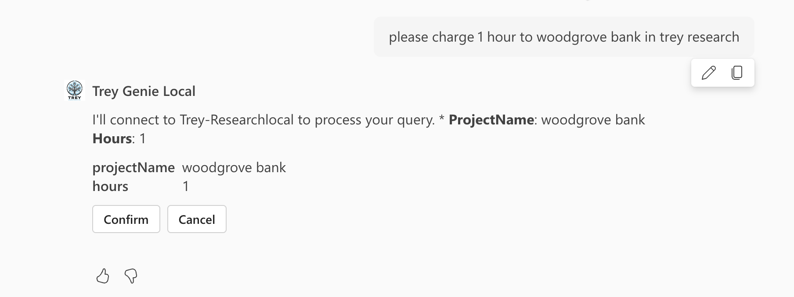

Lab E5 - Add adaptive cards
In this lab you will further enhance the response from Microsoft 365 Copilot from text to rich cards using Adaptive Cards.
In this lab you will learn:
- What are Adaptive Cards
- How to create and test an Adaptive Card
- How to update Microsoft 365 Copilot responses to use Adaptive Cards for rich content
Do these labs if you want to build a Declarative agent where Microsoft 365 provides the AI model and orchestration
- 🏁 Welcome
- 🔧 Set up
- 🧰 Declarative agent fundamentals
- 🛠️ Build and integrate API from scratch
- 🔌 Integration
Introduction
What are Adaptive Cards?
Adaptive Cards are platform-independent UI snippets authored in JSON that can be exchanged between apps and services. Once delivered to an app, the JSON transforms into native UI that automatically adapts to its environment. This enables the design and integration of lightweight UI across major platforms and frameworks.Exercise 1: Create and test a simple Adaptive Card
Let's dive in and discover how fun it is to create adaptive cards.
Step 1: Define Your Adaptive Card in JSON
Here is an adaptive card in JSON. Begin by copying it to your clipboard.
{
"type": "AdaptiveCard",
"body": [
{
"type": "TextBlock",
"text": "Hello, Adaptive Cards!",
"size": "large",
"weight": "bolder"
}
],
"actions": [
{
"type": "Action.OpenUrl",
"title": "Click me",
"url":"https://www.contoso.com"
}
],
"$schema": "http://adaptivecards.io/schemas/adaptive-card.json",
"version": "1.3"
}
This JSON defines a simple Adaptive Card with a text block and a button.
Step 2: Test Your Adaptive Card
To test your Adaptive Card, you can use the Adaptive Cards Designer.
- Open the Adaptive Cards Designer.
- Paste the JSON content into the "Card Payload Editor" section on the lower part of the designer.
- You will see a live preview of your Adaptive Card on the upper part of the designer.
Congrats! You are now fully skilled to develop Adaptive cards for your plugin!
Exercise 2: Update agent response to be richer
Step 1: Add adaptive card files
We are going to add some visibly appealing cards for functions getConsultants, getUserInformation and postBillhours.
Create three files getConsultants.json, postBillhours.json and getUserInformation.json in the appPackage/adaptiveCards folder.
Copy contents from these raw files and paste them into appropriate files:
If you open this JSON file, you'll see the card's structure and how it uses data binding to connect with the API response. Template expressions in the card automatically populate with real data from your API, allowing your agent to present information in a polished, visually appealing format instead of plain text.
Step 2: Update plugin manifest to inlcude adaptive cards
- Open appPackage/trey-plugin.json
- Find the
getConsultantsfunction - Inside
response_semantics, add the following after thepropertiesfield (include the comma also from the snippet):
,
"static_template": {
"file": "adaptiveCards/getConsultants.json"
}
After modification the function getConsultants looks as below:
{
"name": "getConsultants",
"description": "Returns detailed information about consultants identified from filters like name of the consultant, name of project, certifications, skills, roles and hours available. Multiple filters can be used in combination to refine the list of consultants returned",
"capabilities": {
"response_semantics": {
"data_path": "$.results",
"properties": {
"title": "$.name",
"subtitle": "$.id",
"url": "$.consultantPhotoUrl"
},
"static_template": {
"file": "adaptiveCards/getConsultants.json"
}
}
}
}
Repeat for getUserInformation function with below:
,
"static_template": {
"file": "adaptiveCards/getUserInformation.json"
}
And finally for postBillhours function with below:
,
"static_template": {
"file": "adaptiveCards/postBillhours.json"
}
Exercise 3: Test the plugin in Copilot
Before you test the application, update the manifest version of your app package in the appPackage\manifest.json file, follow these steps:
-
Open the
manifest.jsonfile located in theappPackagefolder of your project. -
Locate the
versionfield in the JSON file. It should look something like this:
json "version": "1.0.1" -
Increment the version number to a small increment. For example, change it to:
json "version": "1.0.2" -
Save the file after making the change.
Step 1: Install the plugin
Stop and restart your project to force it to re-deploy the application package. You will be in a window with direct chat with your agent in Copilot.

Step 2: Display an adaptive card
Now try a prompt such below:
Find consultants with TypeScript skills
Instead of just the text response you will also get a rich card with information of the project.

Now try a POST operation prompt such below
please charge 1 hour to woodgrove bank in trey research
Since the request requires Copilot to send some data via POST to the API plugin, you need to confirm that you want to allow Copilot to do so selecting the Confirm button.

Once confirmed, instead of just the text response you will also get a rich card with information of the project.

You can now test other prompts as well to see the improved responses from Microsoft 365 Copilot.
CONGRATULATIONS!
You've completed adding adaptive card responses to your first API plugin. You are now ready to proceed to the next lab to add authentication to your API.